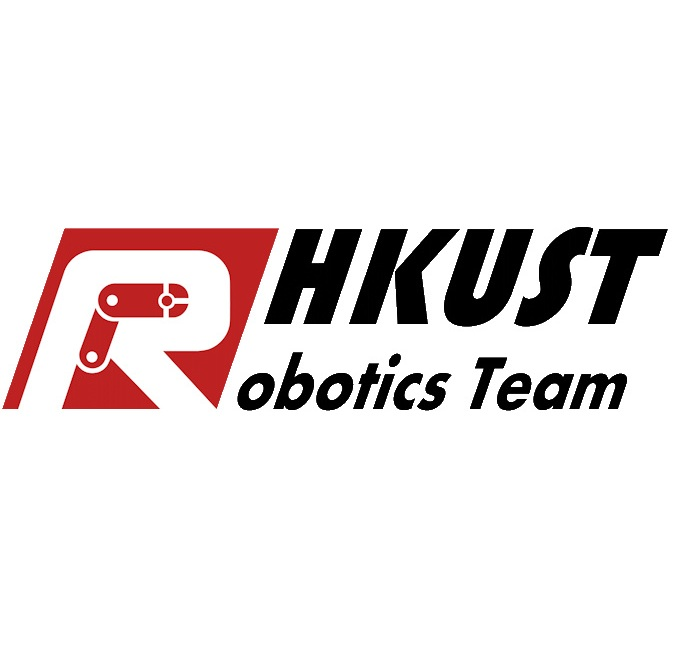
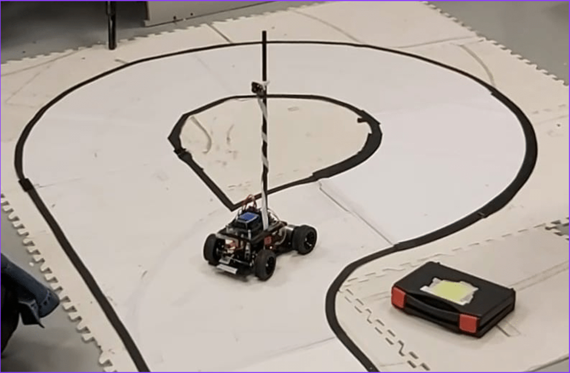
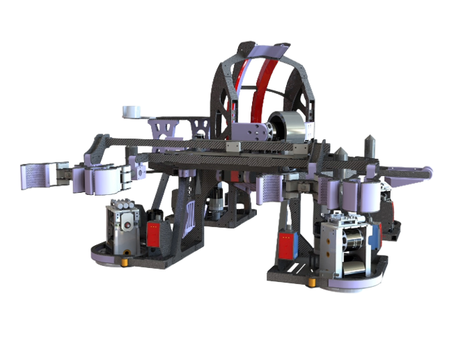
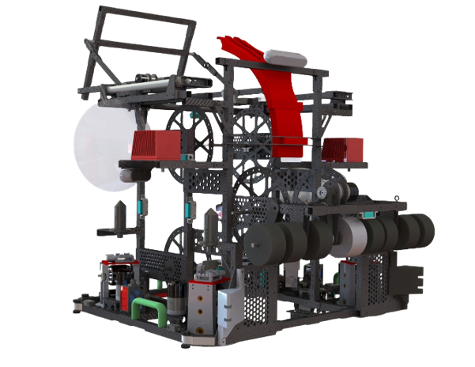
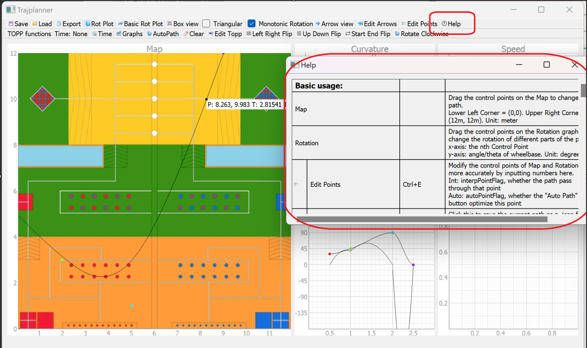

HKUST Robotics Team · Robocon
I have been an active member of the HKUST Robotics Team Robocon sub-team from 2022 to 2024, contributing as a junior software engineer, senior software engineer lead, and RDC PIC. Below is a summary of my journey and achievements.
Senior Software Engineer Lead
June 2023 - June 2024
Robocon sub-team - War Dragon team - R1 (Robot 1) & part of R2 (Robot 2)
- Participated in ABU Robocon Hong Kong Regional Contests 2024.
- Led a team of more than 30 members through multiple iterations of robot design.
- Oversaw the development of 10+ competition robots each year.
Junior Software Engineer
Jan 2023 - June 2023
Robocon sub-team - Fiery Dragon team - RR (Rabbit Robot)
- Participated in ABU Robocon Hong Kong Regional Contests 2023.
- Developed the embedded system C programs for 5+ prototypes and 3+ iterations of robot design.
Awards & Recognition
- 🏆 ABU Robocon Hong Kong 2024 - 2nd Runner-Up (War Dragon)
- 🏅 ABU Robocon Hong Kong 2024 - Best Team Spirit Award
- 🎯 ABU Robocon Hong Kong 2023 - Top 8 (Fiery Dragon)
- 🏆 HKUST Robot Design Contest 2022 - 2nd Runner Up (Group 5 Fibotics)
- 🏅 HKUST Robot Design Contest 2022 - Best Engineering Award (Group 5 Fibotics)
My Robotics Journey Timeline
Software Tutorial 2021 - Trainee
What is the Software Tutorial? The Software Tutorial is an intensive training programme for new members of the HKUST Robotics Team. Over several weeks, recruits learn C programming, embedded systems (GPIO, PWM, UART, Bluetooth), and Git version control - the foundational skills needed to develop robot software. The tutorial includes lectures, hands-on exercises, and coding homework that is automatically graded. It is designed to bring everyone to a common level of competence before they join project teams.
My role: I joined the software tutorial thinking that I have more experience than the rest. I learned C++ from HKDSE ICT and participated lots of robotic competitions in my secondary school. However, I found that the materials are more challenging than I thought. I struggled with Git and Github as I never used them before. I also struggled with concepts like pointers, recursion, and structs. This experience taught me humility and the importance of perseverance. I realised how much I still needed to learn, which motivated me to work harder.
Software Tutorial 2022 - Trainee
What is the Software Tutorial? The Software Tutorial is an intensive training programme for new members of the HKUST Robotics Team. Over several weeks, recruits learn C programming, embedded systems (GPIO, PWM, UART, Bluetooth), and Git version control - the foundational skills needed to develop robot software. The tutorial includes lectures, hands-on exercises, and coding homework that is automatically graded. It is designed to bring everyone to a common level of competence before they join project teams.
My role: After earning an A+ in COMP2011 (Programming with C++), I returned to the tutorial with renewed confidence. I completed every exercise with the top score, demonstrating a solid grasp of C and embedded concepts. This turnaround showed me how far consistent practice can take you.
The 14th Robot Design Contest - Contestant
What is the Robot Design Contest (RDC)? RDC is an internal competition organised by the HKUST Robotics Team for new members. Participants form groups of 12~15 new recruits, coming from software, hardware(electrical), and mechanical tutorials that finished earlier. Each group are given a common set of materials and a game rule. Over two months, they design, build, and program two robots to compete against other groups. It simulates the full engineering cycle and is a key training ground before joining the Robocon team.
My role: I was part of Group 5 - Fibotics. I contributed to the software for both the Automatic Racing Car (ARC) and the Task Robot (TR). Our team achieved 2nd Runner Up and the Best Engineering Award.


ABU Robocon 2023 - Junior Software Engineer
What is ABU Robocon? The Asia-Pacific Robot Contest (ABU Robocon) is an international competition where university teams from the Asia-Pacific region design and build robots to compete in a themed game. Each year a new theme is announced, and teams must construct two robots that work together to complete tasks. The Hong Kong regional contest selects one team to represent Hong Kong at the international finals.
My role: I was responsible for the software part of the Rabbit Robot (RR) of Fiery Dragon. I developed RM wheelbase positioning, real-time trapezoidal pathing, and ToF-based wall following. Our team reached Top-8 in Hong Kong.

Software Tutorial 2023 - Lecturer and Teaching Assistant
What is the Software Tutorial? The Software Tutorial is an intensive training programme for new members of the HKUST Robotics Team. Over several weeks, recruits learn C programming, embedded systems (GPIO, PWM, UART, Bluetooth), and Git version control - the foundational skills needed to develop robot software. The tutorial includes lectures, hands-on exercises, and coding homework that is automatically graded. It is designed to bring everyone to a common level of competence before they join project teams.
My role: As a lecturer and teaching assistant, I helped redesign the tutorial notes and migrate them to GitBook for easier access. I also set up ZINC, an automatic grading system used by HKUST CSE Department, to handle homework for over 100 recruits. This role taught me how to explain complex topics clearly and manage a large-scale educational platform.
The 15th Robot Design Contest - Mentor
What is the Robot Design Contest (RDC)? RDC is an internal competition organised by the HKUST Robotics Team for new members. Participants form groups of 12~15 new recruits, coming from software, hardware(electrical), and mechanical tutorials that finished earlier. Each group are given a common set of materials and a game rule. Over two months, they design, build, and program two robots to compete against other groups. It simulates the full engineering cycle and is a key training ground before joining the Robocon team.
My role: I served as a software mentor for Group 6, guiding them through the design and implementation of their robots.
ABU Robocon 2024 - Senior Software Engineer Lead
What is ABU Robocon? The Asia-Pacific Robot Contest (ABU Robocon) is an international competition where university teams from the Asia-Pacific region design and build robots to compete in a themed game. Each year a new theme is announced, and teams must construct two robots that work together to complete tasks. The Hong Kong regional contest selects one team to represent Hong Kong at the international finals.
My role: I was the Senior Software Engineer Lead for War Dragon. I mainly focused on R1, but I also contributed to War Dragon R2. I developed Track Following Pathing, shooter regression, and sensor fusion. I mentored four junior engineers, guiding them through three generations of the robot. Our team achieved 2nd Runner Up and the Best Team Spirit Award.
Trajplanner Upgrades: As part of my work in 2024, I also maintained and enhanced Trajplanner, the team's in‑house trajectory planning tool. I added a Help Window for new users, one‑click flipping functions for symmetrical fields, start/end velocity control, and memory optimisation. These improvements boosted team productivity and helped all four robots perform better.



Software Tutorial 2024 - PIC
What is the Software Tutorial? The Software Tutorial is an intensive training programme for new members of the HKUST Robotics Team. Over several weeks, recruits learn C programming, embedded systems (GPIO, PWM, UART, Bluetooth), and Git version control - the foundational skills needed to develop robot software. The tutorial includes lectures, hands-on exercises, and coding homework that is automatically graded. It is designed to bring everyone to a common level of competence before they join project teams.
My role: As Person-in-Charge (PIC) for the tutorial, I faced a challenge: GitBook had become paid. I migrated all notes back to GitHub and set up GitHub Classroom to automatically grade homework. This required coordinating with other seniors and ensuring a smooth experience for over 100 new members. The project taught me leadership, adaptability, and the importance of sustainable tooling.
The 16th Robot Design Contest - PIC
What is the Robot Design Contest (RDC)? RDC is an internal competition organised by the HKUST Robotics Team for new members. Participants form groups of 12~15 new recruits, coming from software, hardware(electrical), and mechanical tutorials that finished earlier. Each group are given a common set of materials and a game rule. Over two months, they design, build, and program two robots to compete against other groups. It simulates the full engineering cycle and is a key training ground before joining the Robocon team.
My role: I was the PIC for Software and Game Rule-related matters, overseeing the software development of multiple teams and ensuring the game rules were correctly implemented.